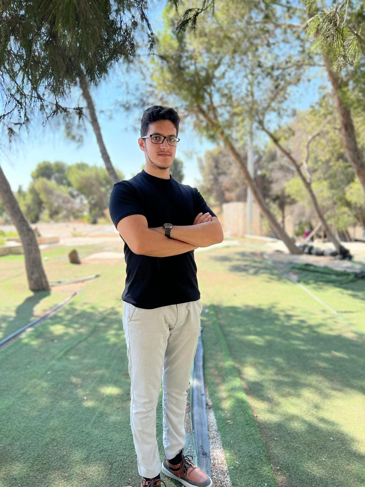
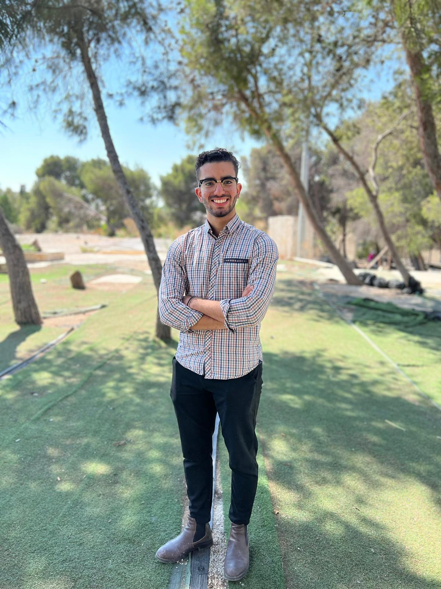

What is MUN?
Model United Nations is a United Nations stimulation where delegates will have the chance to debate issues, work, cooperate and meet new people in order to create contemporary solutions to some of the world's most pressing and challenging issues.
At the end, delegates will have the chance to submit, debate and vote on resolutions!
About AQUMUN:
This program will be organized by medical students from Al-Quds University for the first time.
From our theme we insist on the idea that even if we have reached the 21 century, our health, thoughts, vision are being smeared by ignorance as well as the rights, security and atmosphere,
we took the initiative towards launching this conference as a vaccination by allowing the delegates to have a wider horizons to stand out
debate and preforming resolutions to raise awareness and knowledge.


We aim to enhance the mentality in leadership, negotiation, and diplomacy will be developed in a Model United Nations, to allow medical students share their perspectives and opinions in solving world issues.
Most importantly we aim improve the relations between medical students, allow them to introduce themselves with their fruitful thoughts, improve their understanding to the world as well as their public speaking skills, communication skills and how to think.
Ihab Hmeid
Mohammed Kamel